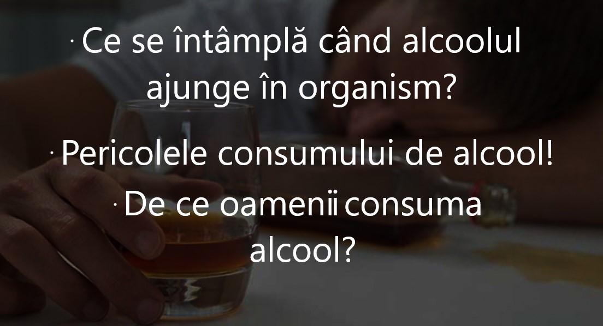

 (1).jpg)
În limbajul curent , termenul de alcool se referă aproape întotdeauna la etanol, cunoscut și ca alcool de cereale, și deseori la orice băutură care conține etanol (vezi băutură alcoolică). Acest sens stă la baza termenului de alcoolism (dependență de alcool). Reținerea de a nu consuma alcool se numește abstinență. Ca medicament, etanolul este cunoscut ca având un efect depresiv, care scade acuitatea reflexelor sistemului nervos central. Alte forme de alcool sunt de obicei denumite cu un adjectiv de rigoare, precum alcool izopropilic sau prin sufixul -ol, ca în izopropanol.
Deoarece alcoolul incepe sa afecteze creierul unei persoane imediat ce patrunde in fluxul de sange, in articolul de fata am dori sa exploram efectele alcoolului asupra organismului.
In cazul unei persoane sanatoase, ficatul metabolizeaza rapid alcoolul si ajuta organismul sa scape rapid de acesta. Totusi, atunci cand o persoana consuma bauturi alcoolice in exces, ficatul nu va mai putea filtra alcoolul suficient de repede, iar acest lucru declanseaza schimbari imediate in creier. De-a lungul timpului, consumul excesiv de alcool poate afecta atat creierul, cat si ficatul, provocand daune de durata.
Consumul excesiv de alcool poate avea efecte de lunga durata asupra neurotransmitatorilor din creier, scazand sever eficacitatea lor. De asemenea, alcoolul distruge celulele ce intra in alcatuirea creierului si atrofiaza tesutul cerebral. Unele persoane cu antecedente de consum excesiv de alcool dezvolta si deficiente nutritionale care, la randul lor, afecteaza in continuare functia creierului.
.jpg)
Sindromul de abstinenta la alcool reprezinta conglomeratul de simptome care apar atunci cand o persoana care se opreste brusc sau reduce semnificativ aportul de alcool dupa o perioada indelungata de timp in care a consumat cantitati mari de alcool.
Sindromul de abstinenta la alcool poate cauza o combinatie de simptome fizice si emotionale, de la anxietate usoara si oboseala, la greata. Unele simptome ale sevrajului alcoolic sunt la fel de severe ca halucinatiile si convulsiile, punand viata in real pericol.
Semnele si simptomele sindromului de abstinenta la alcool pot aparea oriunde intre sase ore si cateva zile dupa consumul ultimei bauturi alcoolice. De obicei, acestea includ cel putin doua dintre urmatoarele:
-tremuraturi ale mainilor;
-anxietate;
-greata;
-varsaturi;
-dureri de cap;
-cresterea ritmului cardiac;
-transpiratie;
-iritabilitate;
-confuzie;
-insomnie;
-cosmaruri;
-tensiune arteriala crescuta.
Simptomele se pot agrava pe parcursul a doua pana la trei zile, iar unele simptome mai blande pot persista saptamani la unele persoane. Acestea pot fi mai vizibile atunci cand ramane mai putin alcool in sange.
| Pro | Contra |
|---|---|
|
Consumul moderat de alcool poate oferi anumite beneficii pentru sănătate, cum ar fi: •Reducerea riscului de a dezvolta boli de inimă •Posibil să reduceți riscul de accident vascular cerebral ischemic (atunci când arterele către creier sunt îngustate sau blocate, cauzând un flux sanguin sever redus) •Posibil să reduceți riscul de diabet Cu toate acestea, o dietă alimentară sănătoase și activitățile fizice zilnice au beneficii mult mai mari pentru sănătate. |
Rețineți că nici consumul moderat de alcool nu este complet lipsit de riscuri. De exemplu, chiar și cei care consumă alcoo rar ( nu mai mult de o băutură pe zi) au un risc mic, dar real, de a dezvolta unele formei de cancer, cum ar fi cancerul esofagian. Iar consumul de alcool, chiar și în cantități mici înainte de a te urca la volan, nu este niciodată o idee bună. |
|
Pe de altă parte, dacă bei ocazional și ești sănătos, probabil poți continua să bei alcool atât timp cât faci acest lucru în mod responsabil. |
Beneficiile potențiale ale alcoolului sunt relativ mici și s-ar putea să nu se aplice tuturor persoanelor. De fapt, ultimele ghiduri de nutriție arată clar că nimeni nu ar trebui să înceapă să consume alcool sau să bea mai des pe baza potențialelor beneficii pentru sănătate. Pentru multe persoane, beneficiile posibile nu depășesc riscurile și evitarea alcoolului este cel mai bun curs. |
|
In cea ce priveste consumul alcoolului in cantitati mari, poate oferi o creste a increderii de sine care te ajuta sa fi mai putin nervos. |
A bea prea mult este pur și simplu periculos – vă poate face să acționați necorespunzător, să creați un potențial de dependență și poate provoca accidente de băut și de conducere. |
|
În sfârșit, acesta este oribil: alcoolul a fost legat la cancerele gurii, faringelui, laringelui, esofagului și colonului, precum și la unele tipuri de cancer mamar. |
În anumite situații, riscurile consumului de alcool pot depăși posibilele beneficii pentru sănătate. De exemplu, cere sfatul medicului în legătură cu consumul de alcool dacă:
• Esti insarcinata sau incerci sa ramai insarcinata
• Ai fost diagnosticat cu alcoolism sau dependență de alcool sau aveți un istoric familial puternic de alcoolism
• Ai avut un atac hemoragic (atunci când un vas de sânge din creier se rupe sau pierde sânge)
• Suferi de boli hepatice sau pancreatice
• Suferi de insuficiență cardiacă sau ți s-a spus că ai o inimă slăbită
• Urmezi un tratament cu medicamente care pot interacționa cu alcoolul.
Deloc neglijabile sunt și efectele fizice pe care le produce consumul de alcool. Pe lângă numeroasele probeleme de sănătate, alcool poate de asemenea să ne facă să avem un aspect fizic mai puțin plăcut. Pentru că alcoolul deshidratează tenul, acesta va părea mai uscat, iar ridurile vor fi amplificate. Consumul de alcool este de asemenea legat de apariția rozaceei, o boală de piele care se manifestă prin pete roșii pe ten, piele iritată.
Consumul exagerat , sau abuzul de alcool este definit ca mai mult de trei băuturi în orice zi sau mai mult de șapte băuturi pe săptămână pentru femei și pentru bărbați peste 65 de ani și mai mult de patru băuturi în orice zi sau mai mult de 14 băuturi pe săptămână pentru bărbați în vârsta de 65 de ani sau mai tineri.
Consumul impulsiv de alcool este definit ca patru sau mai multe băuturi în două ore pentru femei și cinci sau mai multe băuturi în termen de două ore pentru bărbați.
Consumul excesiv de alcool poate crește riscul unor probleme de sanatate grave, inclusiv:
• Anumite tipuri de cancer, inclusiv cancerul de sân și cancerele gurii, gâtului, esofagului și ficatului
• pancreatita
• Moarte subită dacă aveți deja boli cardiovasculare
• Leziunile musculare cardiace (cardiomiopatie alcoolică) care duc la insuficiență cardiacă
• Accident vascular cerebral
• Tensiune arterială crescută
• Ciroză hepatică
• Sinucidere
• Accidentare gravă sau moarte accidentală
• Leziuni ale creierului și alte probleme la un copil nenăscut
• Sindromul de sevraj la alcool
Deşi se ştie că alcoolul produce efecte negative, atât asupra fizicului, cât şi a psihicului, oamenii continuă să-l consume în exces. Psihologii spun că între consumul inofensiv şi cel excesiv de alcool există un prag aproape inexistent şi extrem de uşor de trecut.
De ce consumă oamenii produse şi băuturi despre care ştiu că le fac rău? Este şi cazul alcoolului, care se poate transforma dintr-o plăcere într-un viciu greu de controlat.
Potrivit psihologului Daniela Dragne-Macarie, alcoolul consumat în cantităţi mici devine o plăcere şi se savurează, consumatorii apreciind aroma, gustul şi compania persoanelor din jur. Din păcate, între consumul inofensiv şi consumul excesiv de alcool există un prag aproape insesizabil şi extrem de uşor de trecut, deoarece, în stare de ebrietate se nasc o serie de manifestări, în funcţie de starea emoţională a persoanei: poate trece brusc de la veselie la tristeţe, de la pasivitate la agresivitate, de la tandreţe la brutalitate.
Specialistul spune că există mai multe tipuri de consumatori de alcool, dar şi diferite motivaţii din spatele fiecărei categorii. În 1960, E.M. Jellinek a clasificat consumatorii de alcool în mai multe categorii:
| Nume | Motiv |
|---|---|
|
Băutorii de tip ALFA |
Care au ca motiv principal al consumului relaxarea, destresarea, evadarea din stări de dispoziţie neplăcute. Aceştia consumă alcool pentru a se uşura, încercând să-şi rezolve diferite probleme. În această formă încă există control asupra consumului de alcool, dar progresiv se poate instala dependenţa. |
|
Băutorii de tip BETA |
Aceştia obişnuiesc să asocieze orice situaţie sau eveniment cu consumul de alcool. Consumă frecvent alcool, cu diferite ocazii, la petreceri, nunţi, botezuri, sărbători, aniversări, fără a fi încă instalată dependenţa. |
|
Băutorii de tip GAMA |
Aceştia deja au o nevoie psihică şi fizică de consum, în lipsa consumului apărând stări psihice şi fizice neplăcute (depresie, iritabilitate, nervozitate, melancolie, agresivitate, agitaţie psiho-motorie, dureri şi indispoziţii fizice. Băutorii din această categorie nu mai pot controla cantitatea de alcool consumată, apelând la alcool atât dimineaţa, cât şi seara. |
|
Băutorii de tip DELTA |
Motivul principal al consumului este nevoia fizică de a consuma alcool, obişnuinţa. Aceştia sunt dependenţi de alcool în primul rând fizic. Potpăstra o perioadă mai lungă controlul asupra cantităţii de alcool consumată, nu se îmbată tare, dar nici nu pot renunţa. |
|
Băutorii de tip EPISLON |
Motivul principal al consumului este decompensarea, lipsa capacităţii de a menţine un echilibru, starea de epuizare sau de depăşire a resurselor funcţionale fizice şi psihice. Aceştia sunt dependenţi de alcool, consumând necontrolat timp de câteva zile, având însă şi perioade mai lungi fără consume abuziv. Ca lungime de timp, pauzele dintre episoadele de consum pot varia de la câteva săptămâni până la 5-6 luni, după care pot să existe zile în şir de consum, persoana fiind aproape permanent în stare de ebrietate. |